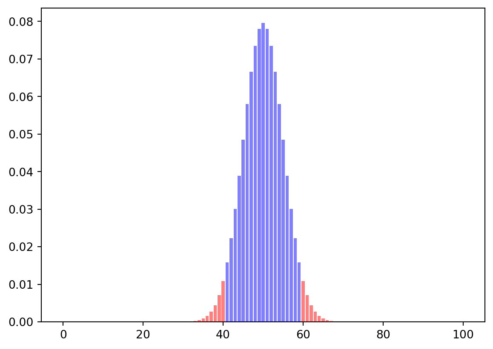
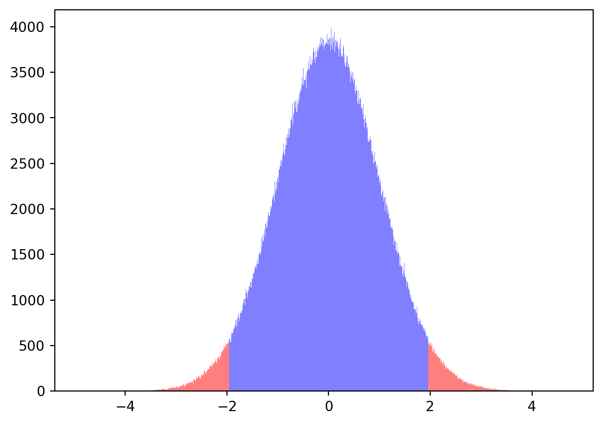
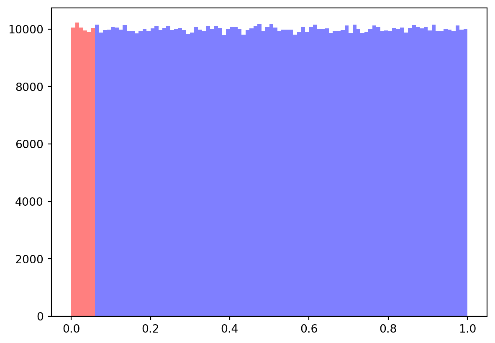
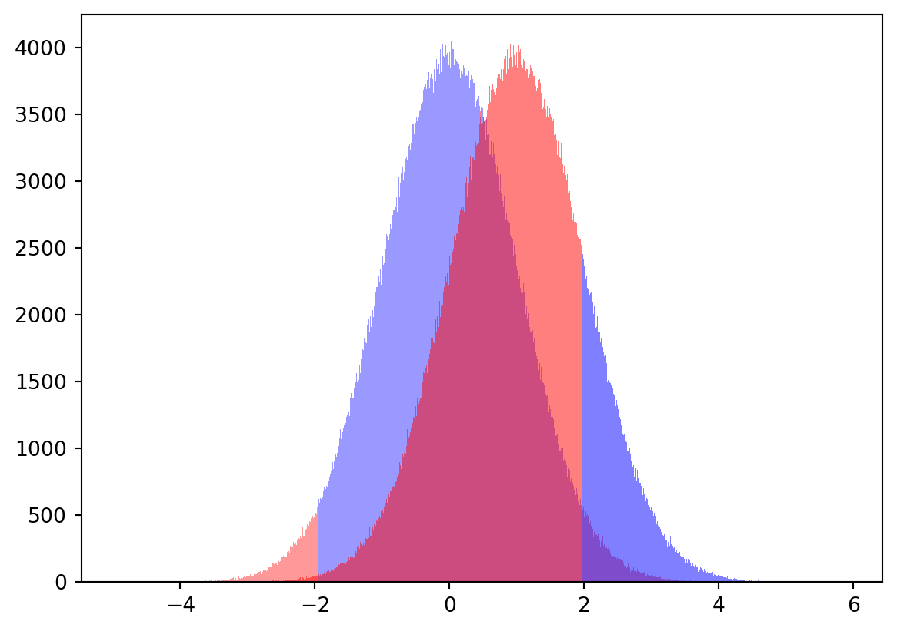
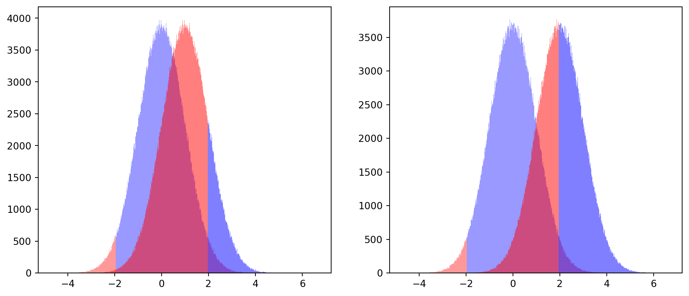
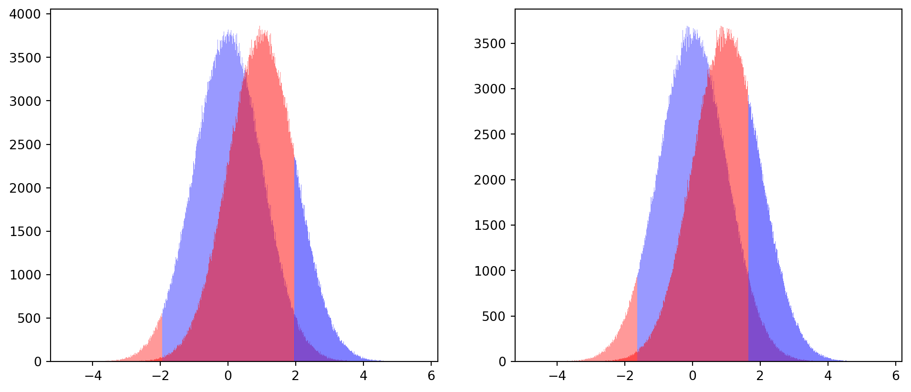
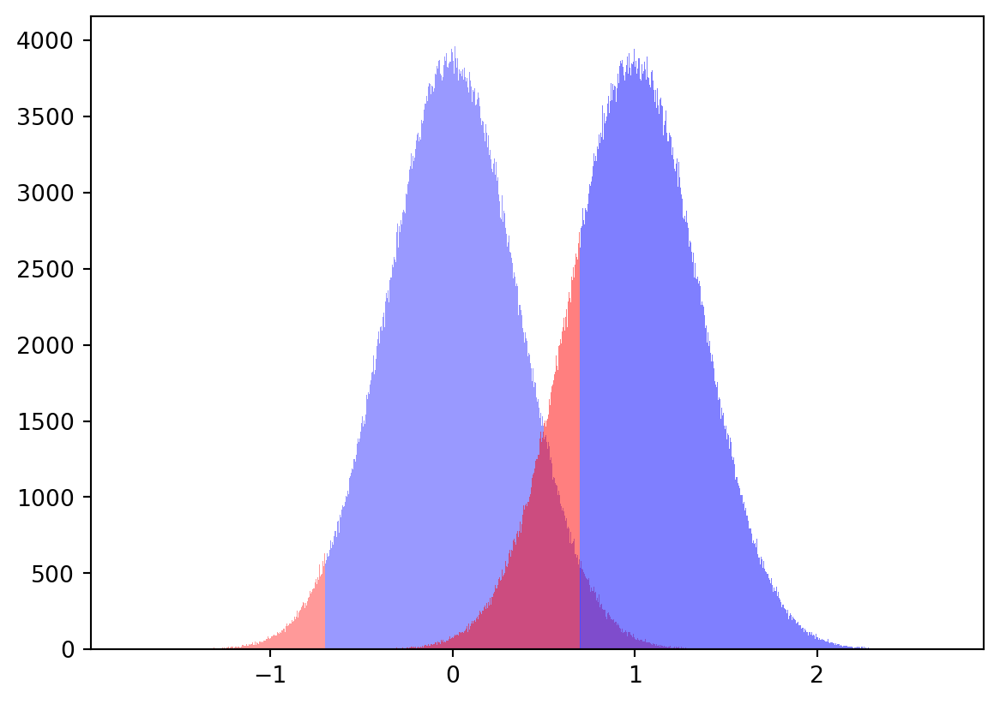

import numpy as np
import pandas as pd
from scipy import stats
import matplotlib.pyplot as plt
def binom_plot(n, obs, p=0.5):
dist = stats.binom(n, p)
x = np.arange(0, n+1)
pmf = dist.pmf(x)
thres = np.abs(np.abs(obs) - n/2)
plt.bar(x, pmf, color=['red' if np.abs(np.abs(i) - n/2) >= thres else 'blue' for i in range(len(x))], alpha=0.5)
plt.show()为什么要做实验？
两个现实中的问题 - 应用新版本发布7天后，新版用户留存率比老版本用户留存率提升10%，是否说明新版本取得了成功？ - 对商品涨价后，单月收入环比上月提升30%，同比去年提升10%，收入增长了么？赚了多少？
虽然有了数据，我们仍然很难得到判断，因为我们关注的是因果（反事实）。而随机实验可以观测因果，所以要做实验
实验结果可信么？
我做了AB实验，实验组平均付费比对照组提升了1.1元，我的实验策略是否是有效的？
由于现实中充满波动性，这个问题很难直接回答。但如果知道事件随机发生概率是多少，我们至少有一些把握
以最简单的抛硬币为例：
- 一枚硬币扔了10次，其中6次正面，硬币是否均匀？
如果硬币是均匀的，得到这种情况或者更极端情况的概率是多少：\[P(投10次6次以上某一面 | 硬币均匀)\]
binom_plot(10, 6)- 一枚硬币扔了100次，其中60次正面，它是否均匀？
\[P(投100次60次以上某一面 | 硬币均匀)\]
binom_plot(100, 60)
- 一枚硬币扔了1000次，其中600次正面，它是否均匀？
\[P(投1000次600次以上某一面 | 硬币均匀)\]
binom_plot(1000, 600)实验也可以用类似的方法计算概率。其中最常用的是基于正态分布来计算：
由于实验样本量一般较大，分组样本一般满足中心极限定律 > 中心极限定律：
> 当大量随机变量相互独立时，它们的和或平均值的分布接近于正态分布。
由此可得： \[\bar{X}_A \sim N(E(X_A), \sigma^2/cnt_A),\ \ \ \bar{X}_B \sim N(E(X_B), \sigma^2 / cnt_B)\]
若实验策略无效，实验组与对照组期望效果相同：\(E(X_A) = E(X_B)\)
根据两个正态分母随机变量相减仍然服从正态分布的性质，则此时： \[\bar{X}_A - \bar{X}_B \sim N(0, \sigma^2/cnt_A + \sigma^2/cnt_B)\]
因此可以计算：在实验策略无效的情况下，得到这样的数据或者更极端数据的概率是多少？ —— 此概率越低，则实验策略有效概率越大
有了概率后如何决策？
自然发生概率越低，实验策略有效概率越大。我们应该怎么基于这个数值进行决策？
真相只有一个，但有两种可能，随之会导致两种决策错误：
- 假阳性。实验策略无效，被误认为有效，类比于没得新冠检验阳性
- 假阴性。实验策略有效，被误认为无效，类比于得了新冠检验阴性
只要控制住这两种错误发生的概率，决策就是可靠且风险成承受的
如何选取阈值要基于业务场景：
- 互联网业务下，一般冒然变更风险大于收益，更看重于控制假阳性。最常见的阈值是：假阳性控制在0.05以内，假阴性控制在0.2以内；
- 生命只有一次，医院检查中更看重控制假阴性。
假阳性如何控制
由于没有效果时期望为0，即\(E(\bar{X}_A - \bar{X}_B) = 0\)，假阳性是很容易控制的
假设我们对无效的实验做了100w次，并且根据假阳性0.05选择阈值，模拟可以得到下面的结果：
def h0_simulation(alpha = 0.05, trans = 0.5, ax=None, std_err = 1):
norm_sample = np.random.normal(0, std_err, 1000000)
if ax:
_, bins, patches = ax.hist(norm_sample, bins=1000, alpha=trans);
else:
_, bins, patches = plt.hist(norm_sample, bins=1000, alpha=trans);
for index, bin in enumerate(bins):
if index >= len(patches):
break
if -np.abs(bin) <= stats.norm.ppf(alpha / 2) * std_err:
patches[index].set_facecolor('red')
else:
patches[index].set_facecolor('blue')
return norm_sample
norm_sample = h0_simulation()
对每个情况计算起随机产生的概率值（pValue），它的分布如下：
def p_calculator(norm_sample, alpha=0.05):
p_values = stats.norm.cdf(-np.abs(norm_sample)) * 2
# counts, bins = np.histogram(p_values, bins=100)
_, bins, patches = plt.hist(p_values, bins=100,alpha=0.5);
for i in range(int(100 * alpha + 1)):
patches[i].set_facecolor('red')
for i in range(int(100 * alpha + 1), len(patches)):
patches[i].set_facecolor('blue')
return p_values
p_values = p_calculator(norm_sample)
由于实验无效，每次判断都是误判。
统计我们决策错误的频率，会发现基本等于我们的控制目标0.05。 统计下频率：
(p_values <= 0.05).mean()0.049946假阴性控制
假设实验策略有效：\(\Delta = E(\bar{X}_A - \bar{X}_B)\) 依据为控制假阳性所选取的阈值，范假阴性错误的几率是多少？
h0_sample = h0_simulation(trans=0.4)
def h1_simulation(h0_sample, delta = 1, alpha = 0.05, ax=None, std_err=1):
h1_sample = h0_sample + delta
if ax:
_, bins, patches = ax.hist(h1_sample, bins=1000, alpha=0.5);
else:
_, bins, patches = plt.hist(h1_sample, bins=1000, alpha=0.5);
for index, bin in enumerate(bins):
if index >= len(patches):
break
if bin >= stats.norm.ppf(1 - alpha / 2) * std_err:
patches[index].set_facecolor('blue')
else:
patches[index].set_facecolor('red')
return h1_sample
h1_simulation(h0_sample);
要降低假阴性，我们可以怎么做？ - 尽量增大实验效果，增大两峰之间距离 —— 这与创意质量相关，实验无法影响
_, axs = plt.subplots(1, 2, figsize=(12, 5), sharex=True)
h0_sample = h0_simulation(trans=0.4, ax=axs[0])
h1_simulation(h0_sample, ax=axs[0]);
h0_sample = h0_simulation(trans=0.4, ax=axs[1])
h1_simulation(h0_sample, delta=2 ,ax=axs[1]);
- 降低假阳性的要求 —— 有时实验常常取0.1做为阈值
_, axs = plt.subplots(1, 2, figsize=(12, 5), sharex=True)
h0_sample = h0_simulation(trans=0.4, ax=axs[0])
h1_simulation(h0_sample, ax=axs[0]);
h0_sample = h0_simulation(trans=0.4, alpha=0.1, ax=axs[1])
h1_simulation(h0_sample, alpha=0.1, ax=axs[1]);
- 减少结果波动性（降低标准误），让分布变得更加「高瘦」—— 这是实验可以改善的
_, axs = plt.subplots(1, 2, figsize=(12, 5), sharex=True)
h0_sample = h0_simulation(trans=0.4, ax=axs[0])
h1_simulation(h0_sample, ax=axs[0]);
h0_sample = h0_simulation(trans=0.4, std_err=0.5, ax=axs[1])
h1_simulation(h0_sample, std_err=0.5, ax=axs[1]);降低波动是控制检出率的关键。减少波动方法：
- 增加样本量 —— 最常用方案，通过增加数量减小标准误
- 处理离群值 —— 减少极值影响，通过降低样本方差减小标准误
- 降噪算法 —— 控制变量法等
控制假阴性需要多少流量?
以上可知，假阴性与「真实效果」、「假阳性水平」、「样本方差」、「样本量」等因素相关，那么多大的样本量可以控制假阴性呢？
\[样本量 = f(真实效果,假阴性水平,假阳性水平, 流量分配比例, 样本方差)\]
其中入参中真实效果是未知的，导致无法直接计算，该如何解决？
解决方案是引入最小检测效果（Minimum Detectable Effect）。基于此值计算样本量，可保证实验效果大于等于此值时「假阴性」符合标准
控制假阴性是为了保证检出率，检出率定义为「功效（power）」：\[功效 = 1 - 假阴性控制水平\] 分析达到目标功效需要多少流量，称为功效分析
以双尾等流量实验为例：
定义假阳性控制目标为\(\alpha\)，等流量双尾检验下，控制power需要满足条件： \[ \frac{MDE}{\sqrt{(\sigma^2 / n + \sigma^2 / n)}} \geq \phi^{-1}(1 - \alpha / 2) + \phi^{-1}(power) \]
其中\(\phi^{-1}\)是正态分布的逆累积分布函数，由上可推出：\[n \geq 2\sigma ^{2} [ \phi^{-1} (1 - \alpha/2) + \phi^{-1} (power )]^{2}/MDE^2\]
以mde = 1, alpha = 0.05, power = 0.8, var = 100计算需要样本量，按此样本量仿真100w次，结果如下：
mde = 1
alpha = 0.05
power = 0.8
var = 100
n = int(2 * var * (stats.norm.ppf(1 - alpha / 2) + stats.norm.ppf(power)) ** 2 / mde ** 2)
std_err = np.sqrt(var / n * 2)
h0_sample = h0_simulation(trans=0.4, std_err=std_err)
h1_sample = h1_simulation(h0_sample, std_err=std_err)
p_values = stats.norm.cdf(-np.abs(h1_sample) / std_err) * 2
N, bins, patches = plt.hist(p_values, bins=100,alpha=0.5);
for i in range(11):
patches[i].set_facecolor('blue')
for i in range(11, len(patches)):
patches[i].set_facecolor('red')统计一下：
(p_values <= 0.05).mean()0.800003